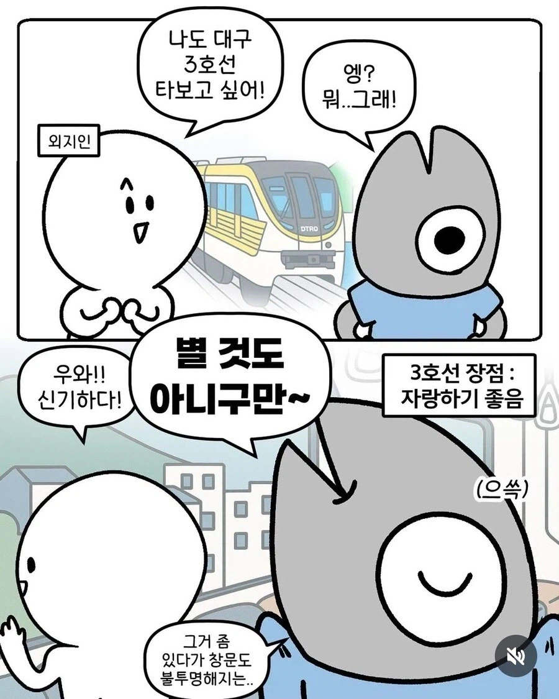
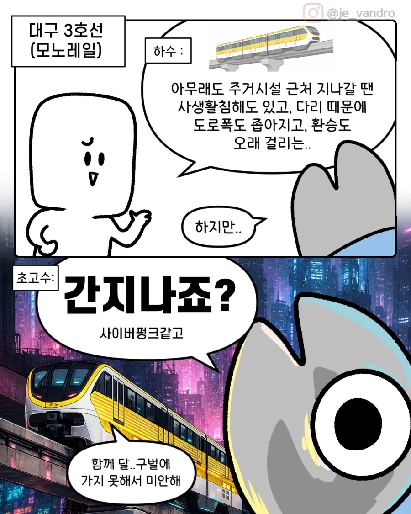
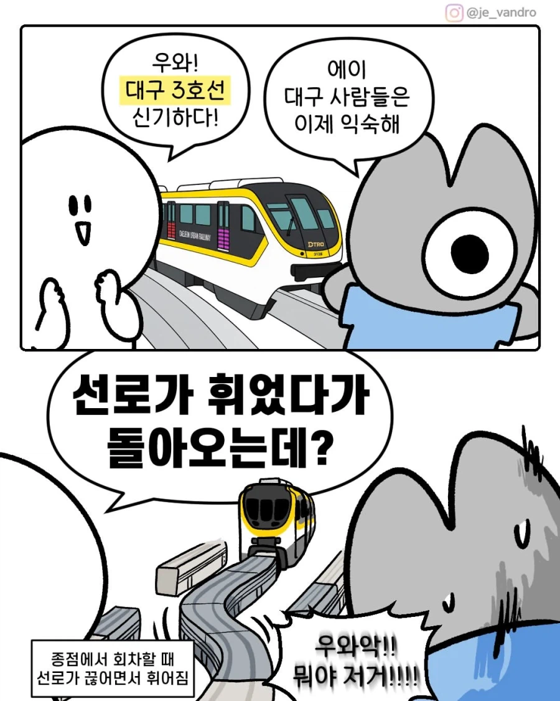

77 · 4 · 4 시간 전 · 원문

주거지역 지날 때 불투명해지는 창문

족간지남

선로가 움직임
수집 당시 댓글 4개
버블피쉬 · 2 시간 전
저거때문에 틀딱들 뻑가서 4호선 갈아엎고 모노레일로 하자고 역돌격해서 지연먹음 ㅋㅋㅋㅋ정작 히타치 기술땜에 안되는데
미세민지 · 2 시간 전
멋진데????
러셀스싱글배럴 · 1 시간 전
(사이버펑크 2026콘)
인간성기사뿌뿌뽕 · 방금 전
개쩔긴 하네 ㄷㄷㄷ
저거때문에 틀딱들 뻑가서 4호선 갈아엎고 모노레일로 하자고 역돌격해서 지연먹음 ㅋㅋㅋㅋ
정작 히타치 기술땜에 안되는데